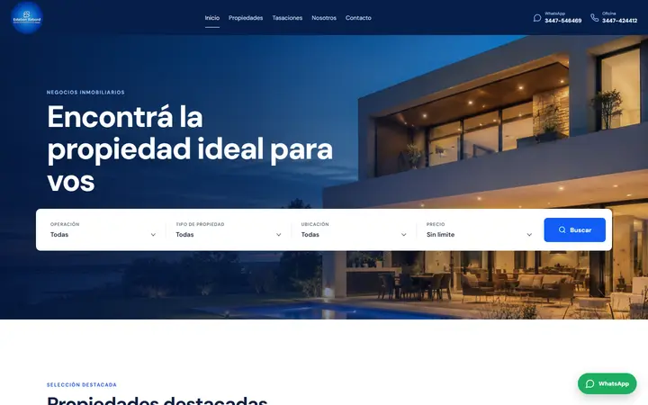
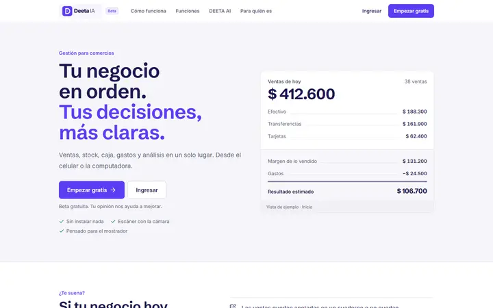

MB Moodboard · concepto
Precisión
digital
INNOVACIÓN · PRECISIÓN · SIMPLICIDAD
 Ref · rauno.me — tipografía protagonista
Ref · rauno.me — tipografía protagonistaACCENT#2E3BFF
azul eléctrico
azul eléctrico
Textura · grilla de plano 24/48 px
 Ref · timeline + nav activa
Ref · timeline + nav activaGEIST / GEIST MONO
Aa Bb 0123
01 / Proyectos — 2026

Propio · RebordNeutros cálidos

Propio · DEETA Ref · leerob.com — aire y legibilidad
Ref · leerob.com — aire y legibilidadCOMPONENTES